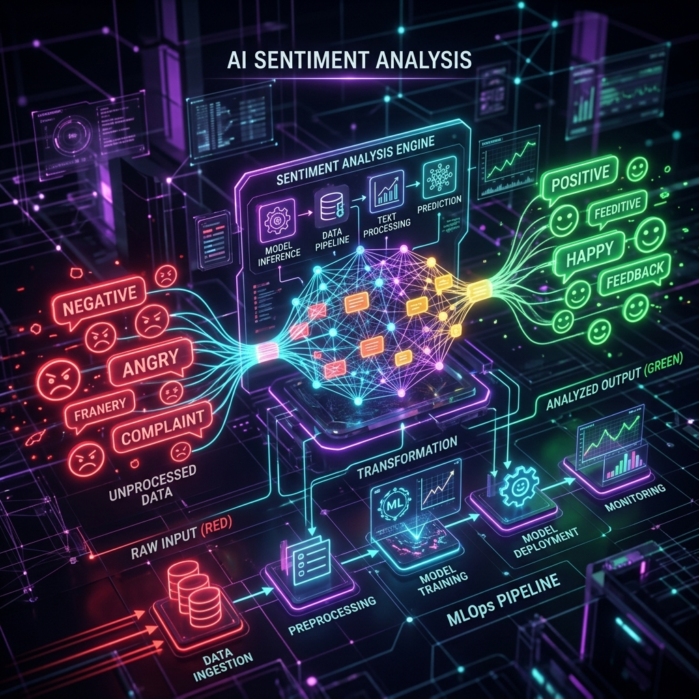
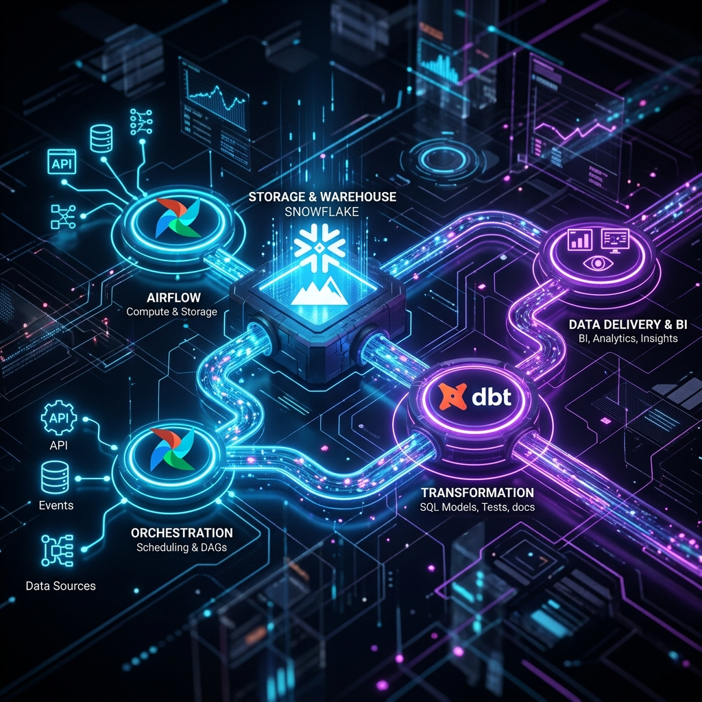
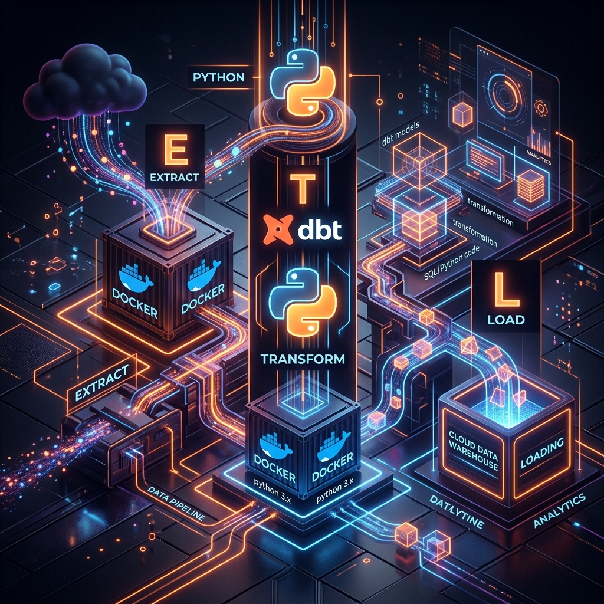
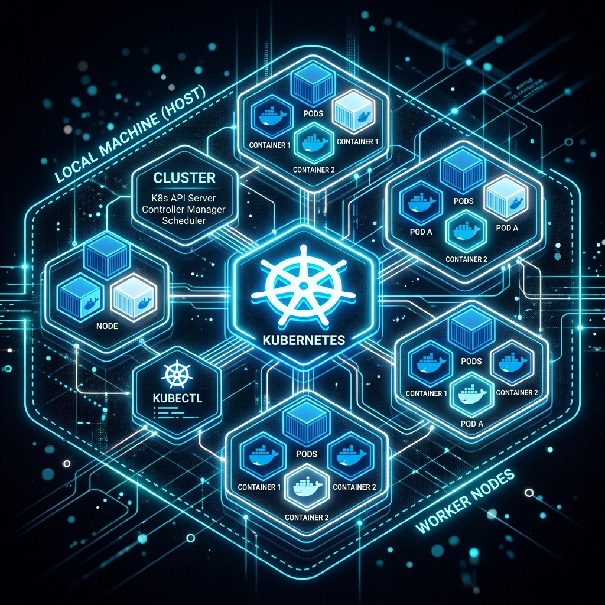
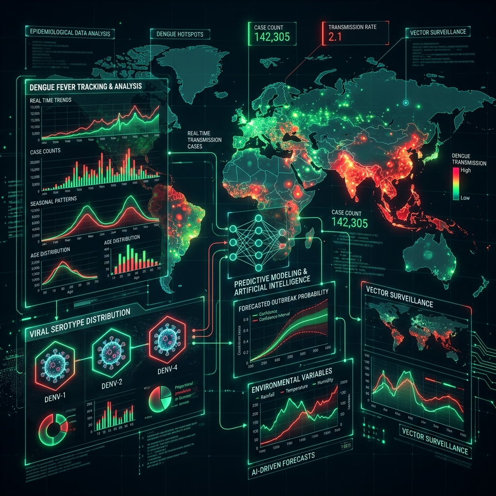

Transformando dados complexos em sistemas inteligentes e escaláveis.
Explorar Projetos"Converter regras de negócio em arquitetura de software exata, inserindo capacidades generativas com previsibilidade matemática e segurança."
Implementação de arquitetura RAG para conectar LLMs a bases de conhecimento privadas, utilizando embeddings e bancos de dados vetoriais para garantir respostas ancoradas em fatos.
Ver no GitHubDesenvolvimento de pipelines robustos e escaláveis para extração, transformação e carregamento de dados (ETL). Arquitetura focada em performance para grande volume de requisições.
Ver no GitHubSistema autônomo para coleta e análise de vagas utilizando técnicas de web scraping associadas à análise de IA para matching perfeito de perfil.
Ver no GitHubAssistente jurídico inteligente com múltiplas personas. Integração RAG 100% local para leitura de PDFs e Agent autônomo com Web Search (LexML) usando Gemini 2.5 e LangChain.
Ver no GitHubPipeline completo e encadeado de engenharia de dados. Orquestração com Airflow integrando Kafka Connect (CDC), Spark, Data Lakes (MinIO), Postgres (Data Warehouse) e DuckDB para consultas diretas.
Ver no GitHub
Pipeline MLOps para Análise de Sentimentos utilizando Hugging Face Transformers. Rastreamento de experimentos com MLflow, inferência via FastAPI e interface de usuário construída com Gradio.
Ver no GitHub
Pipeline analítico escalável construído com as melhores ferramentas do ecossistema. Orquestração e transformação de dados projetados para alta performance.
Ver no GitHub
Extração, transformação e carga conteinerizada com Docker. Integração de scripts Python e modelos dbt para testes de qualidade e confiabilidade rigorosa dos dados.
Ver no GitHubPipeline de dados end-to-end simulando e-commerce. Modelagem de dados dimensional para geração de métricas de vendas, conversão e comportamento de usuários.
Ver no GitHub
Provisionamento e deploy de infraestrutura cloud-native localmente usando K3d. Foco em estabilidade, resiliência e boas práticas DevOps para dados.
Ver no GitHub
Análise de dados epidemiológicos, tendências e modelos preditivos para acompanhamento e suporte à tomada de decisão em saúde pública.
Ver no GitHub